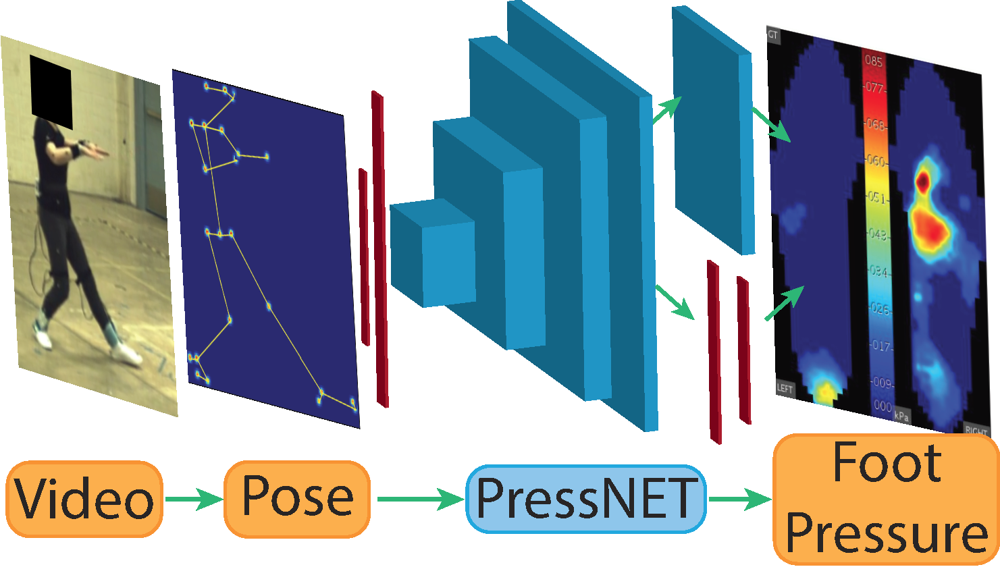

PressNET

The data
The researchers needed video and true foot pressure recorded at the same moment. Six people performed the 24-form Tai Chi routine, about five minutes each time, wearing pressure insoles while cameras filmed them. Three were professionals with 20 or more years of practice, and three were amateurs. The result was about 794,000 matched pairs of video frame and pressure map. Tai Chi was chosen because it is slow, needs no equipment, and still includes many different poses [1].
Input and output
The input is the 48-number skeleton from the previous page. The output is a 60 by 21 pressure image for each foot, with values scaled between 0 and 1 [1].
How the network works
The design borrows from image generators, because the network has to turn a short list of numbers into a picture. In order:
- A fully connected layer expands the 48 numbers into a tiny 4 by 3 image with 512 channels.
- Four residual blocks enlarge that image step by step. Each block combines convolutions of different sizes with a fully connected path, and the channel count falls from 512 to 64 as the image grows.
- Two branches finish the job. A convolutional branch keeps neighboring pixels consistent, and a fully connected branch looks at the whole foot at once. Their outputs are added together.
- A foot-shaped mask zeroes out pixels outside the sole, so the network only learns pressure and not foot shape. A sigmoid squeezes the result into the 0 to 1 range.
The whole network has roughly 3 million parameters [1].
Training
The network is trained to minimize mean squared error using the Adam optimizer. The key design choice is leave-one-subject-out testing: each round trains on five people and tests on the sixth, so the score reflects how well it handles someone it has never seen [1].
The baseline: nearest neighbor
To judge PressNET, the authors compared it with a simple method. For each test pose, K-nearest-neighbors finds the most similar pose from the other five people and copies its pressure map. The reasoning is that similar poses should give similar pressure. It is easy to understand, but it has no way to adapt to differences between people [1].
Results
PressNET's average error was 5.16 kPa against 11.6 kPa for the baseline, and the gap was statistically significant. For center of pressure, PressNET's error was about 10 mm per foot against about 60 mm for the baseline. Its predictions were also smooth from frame to frame, while the baseline's jumped around [1]. The next page looks at what these numbers do and do not show.
A follow-up paper adds a simpler network that uses only fully connected layers, plus base of support estimates [2].